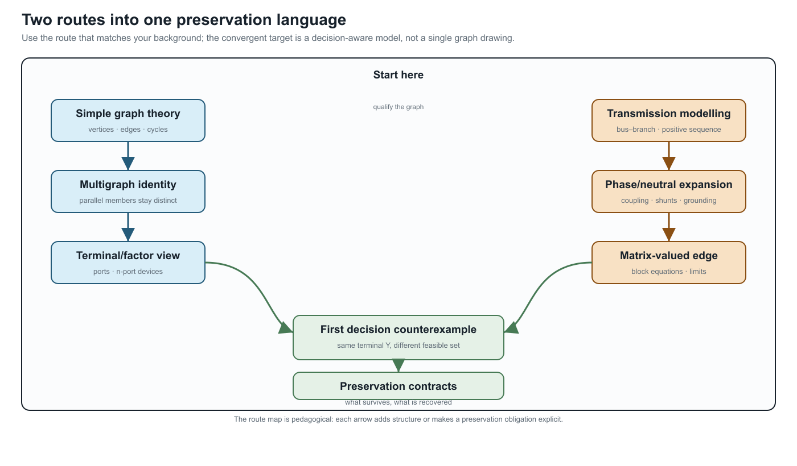

Reading guide: from simple graphs and transmission models to multiconductor networks
Page status: audience-specific route map; the formal definitions and executable evidence remain in the linked foundation and case chapters.
This book has two common starting points. A graph reader brings vertices, edges, incidence, cycles, and sparsity. A power-system reader brings a balanced bus–branch model, often in positive sequence. Both are useful specializations. Neither is the full multiconductor power-network model.
Choose a route below, then join the shared path at the four-wire relation and the first decision counterexample.
Two routes into one language
| Starting point | Familiar model | First qualification | Shared question |
|---|---|---|---|
| Simple graph theory | vertices, edges, paths, cycles, incidence | an electrical factor can be vector-valued, and a support cycle need not be a physical loop | which graph, coordinates, and identities are retained? |
| Balanced transmission modelling | one complex relation per bus pair, often positive sequence | phase/neutral coordinates, coupling, shunts, grounding, ports, and limits may have been collapsed | which assumptions and decision constraints make the specialization valid? |

If you come from simple graph theory
Follow this short sequence:
- Edge → terminal relation. A scalar branch may satisfy $i_{\ell ij}=y_\ell(v_i-v_j)$. A four-wire factor instead maps ordered terminal spaces: $\mathbf I_{\ell ij}=\mathbf Y_\ell(\mathbf U_i[\mathbf N_{\ell i}]-\mathbf U_j[\mathbf N_{\ell j}])$. The identity $\ell$ and attachment triple $\ell ij$ are not matrix coordinates.
- Vertex → terminal space. A bus can own phase and neutral terminals, so one graph vertex may represent a block of variables. A dense block records coupling; it does not create one asset per nonzero entry.
- Simple projection → identified multigraph. Parallel members retain separate ratings, states, owners, and outage decisions even when their unconstrained admittances add.
- Cycle → qualified cycle. Member cycles, simple-quotient cycles, port–factor cycles, and scalar support cycles answer different questions.
- Edge → factor. A three-winding transformer is one typed factor with three port bundles. A star or clique is a derived lowering target, not an automatic replacement.
Then read Five-bus cycle spaces, Five buses through a multi-port lowering, Two topology levels and the nodal projection, and Circuit formulations and the lowering boundary.
If you come from balanced transmission modelling
Use this sequence to unpack the familiar model without discarding it:
- Positive sequence is a specialization. Ask which balance, transposition, grounding, and frequency assumptions justify it for the study.
- Expand one edge first. Move from scalar edge to four-wire matrix edge, then to a port–factor relation and a block nodal operator. At each step record added coordinates, coupling, shunts, terminal maps, and decisions.
- Requalify flow. A lossy AC factor has terminal currents and powers; endpoint shunts and grounding can make the two terminal observations different. Stored orientation fixes signs, not operating direction.
- Keep eliminated quantities accountable. Kron reduction can preserve a boundary voltage relation while removing neutral current, grounding, or protection constraints from the reduced problem unless they are recovered.
- Promote transformers to factors. Multiwinding devices, connection maps, internal grounding, and controls may require a typed factor or tableau/MNA target rather than an ordinary branch.
- Treat radial language as conditional. Upstream/downstream belongs to a selected active rooted tree; switching and meshing can invalidate it.
Then read When the general model collapses, From conductor geometry to impedance fidelity, A first failure: heterogeneous parallel branches, and Kron, Ward, and optimized network equivalents.
The shared convergence point
Both routes meet at one preservation question:
What does this representation preserve for the observation, constraint, and decision I care about?
The deliberately small counterexample is two identified parallel branches: their terminal admittances can sum exactly while their individual current limits produce a different feasible set. Continue with Preservation contracts and Translation traps whenever edge, flow, radial, or equivalent appears without a qualifier.
The practical checklist is short: name the objects and index meanings; state the coordinates and graph view; distinguish stored orientation from operating transfer; and write the preservation target (behaviour, limits, decisions, objectives, recovery, or provenance). This is enough to let both communities share notation without treating either starting graph as the universal ontology.